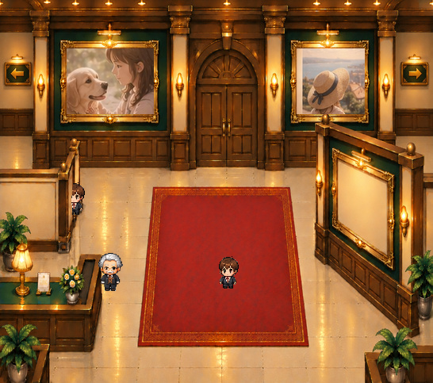
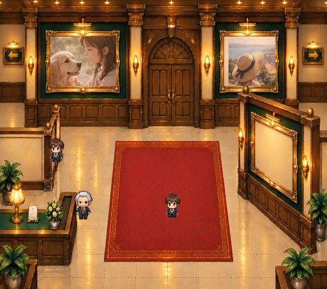

キャラクターがいる位置を切り替える
正式PNGのキャラクターを、壁・手すりの奥または手前に合成しています。
原本からの分離
壁本体と木の手すりをそれぞれ透過PNGにし、元絵と同じ位置へ戻したときに完全一致するようにしました。


奥にいる状態

手前にいる状態固定建築物の前景遮蔽専用です。壁自体の自由配置・拡大には対応しません。ゲーム本体は未変更です。
キャラクターが通路の奥へ移動した際の前後関係を、実画像のレイヤーで確認します。
正式PNGのキャラクターを、壁・手すりの奥または手前に合成しています。
壁本体と木の手すりをそれぞれ透過PNGにし、元絵と同じ位置へ戻したときに完全一致するようにしました。

奥にいる状態
手前にいる状態固定建築物の前景遮蔽専用です。壁自体の自由配置・拡大には対応しません。ゲーム本体は未変更です。